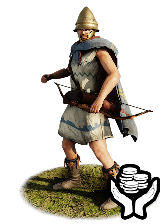
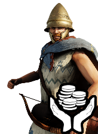
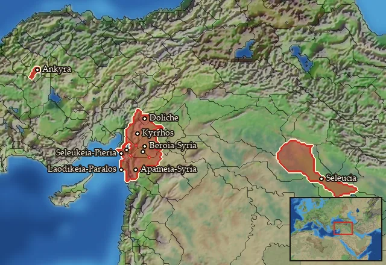

RTR: Imperium Surrectum
RTR: Imperium SurrectumMercenary Agrianian Archers


Mercenary. Hired from a regional pool, not recruited from a building.
Class: missile · Category: infantry · Men per unit: 40
Description
The Agrianes are a Paionian tribe on the upper Strymon, to the Northwest of Macedon. They have been helping and serving the Macedonian kings ever since Philip II, and repeatedly formed a body of elite task forces together with the hypaspists and archers. Though they were almost always recruited to fulfil the role of javelinmen, the Agrianes were found among the slingers and archers in the army of Antiochos III at Raphia in 217 BC. They are armed with composite bows and the infamous Thracian sicas, protected by Pilos and Phrygian helmets, as well as painted Pelte shields. Besides this, they only wear their patterned tunics and colourful cloaks, as well as sturdy Thracian boots. They are quite skilled in archery, and though they should be protected against cavalry, they can hold their own in prolonged melee engagements with other missile and infantry units.
Historical background
The Agrianes first appear in the historical records as subjects of the mighty Odrysian king Sitalkes (second half of the 5th century BC), who at that time controlled most of Thrace. They were part of his army when he invaded Macedon in 429 BC and attacked king Perdikkas II (c. 450-413 BC; Thuc. II.96). Despite some successes for the Thracians, they eventually retreated, and Sitalkes fell in battle against the Triballi five years later (Thuc. IV.101.5). However, the Agrianes would rise to fame in the service of their previous enemies: Philip II of Macedon forged a personal bond with them and gave their warriors a special place in his army (FGH 115 Theopompos of Chios, F 145). They played a crucial role in the victorious battles of the king and, after his death, swore loyalty to his son Alexander III, who would become known as Alexander the Great. Langaros, the king of the Agrianes at the time, had already been a personal friend of Alexander when he was still a young prince and supported him in the assault on the Illyrian Autariatai, who were planning on attacking him (Arr. Anab. I.5.1-10). Langaros was rewarded with honours, and though he fell ill and died on his way home, his Agrianes followed Alexander on his campaign against Persia.
After not only repeatedly proving their worth but also excelling at the tasks and challenges they were confronted with on Alexander’s campaigns, Agrianian peltasts saw continuous service in the armies of the Diadochoi after Alexander’s death. They did not only serve the Antigonids of Macedon (Liv. 33.18.8; 14; Polyb. 2.62.2; 10.42.2; until their defeat against the Romans at Pydna in 168 BC: Liv. 42.51.5). The famous battle of Raphia between Ptolemy IV Philopator (c. 244 – 204 BC) and Antiochos III the Great (241 – 187 BC) in 217 BC saw many mercenaries, allies, Greeks, and non-Greeks from all over the territories of both forces recruited into the military to bolster the respective armies. Here, the Agrianes appear again, this time not as peltasts, but together with the Persians as slingers and archers (Pol. 5.79.6). Their equipment is not specified, though it might have been a mixture of the standard protective gear in Hellenistic armies (Pilos and Phrygian helmets), and traces of their native fashion and equipment (the famous Thracian sicas, cloaks, patterned tunics, and boots). Furthermore, they carry wicker Pelte shields with Thracian designs, not only to protect themselves during the skirmishing phase, but also to get involved in melee combat in case of emergencies, special tasks, or plugging the main line.
Stats
| Rank in roster | Rank in roster | Rank in roster | Rank in roster | ||||||||
|---|---|---|---|---|---|---|---|---|---|---|---|
| Men per unit | 40 | ███······· 31% | Attack | 11 | ████······ 44% | Charge bonus | 4 | ██········ 21% | Defence | 14 | █········· 6% |
| · armour | 3 | ██········ 22% | · defence skill | 11 | █········· 6% | · shield | 0 | █········· 0% | Morale | 8 | ██········ 19% |
| Discipline | Normal | Training | Untrained | Upkeep per turn | 594 dn | ████······ 39% |
Weapons
| Primary | Secondary | Primary | Secondary | Primary | Secondary | Primary | Secondary | ||||
|---|---|---|---|---|---|---|---|---|---|---|---|
| Attack | 11 | 4 | Charge bonus | 4 | 4 | Type | missile · archery | melee · simple | Damage | piercing | piercing |
| Projectile | arrow | — | Range | 170 | — | Ammunition | 30 | — |
Defence
| Primary | Secondary | Primary | Secondary | Primary | Secondary | Primary | Secondary | ||||
|---|---|---|---|---|---|---|---|---|---|---|---|
| Total | 14 | — | Armour | 3 | — | Defence skill | 11 | — | Shield | 0 | — |
Condition and terrain
| Hit points | 1 | Modifier against mounts | elephant -1 | Ground: scrub / sand / forest / snow | 0 / 0 / 0 / 0 | Charge distance | 30 |
| Formations | Square |
Technical stats
| Time between blows (primary / secondary) | 2.5 s / 2.5 s | Extra fatigue in hot climates | 0 | Collision mass per man (1.0 is normal) | 0.84 | Spacing between men: close / loose | 1.2 × 2.8 m / 2.16 × 5.04 m |
| Default ranks | 5 |
In battle: Can hide in long grass · Very good stamina
Where to hire it
Mercenaries are hired from a regional pool, not recruited from a building. This unit is offered by 3 pools covering 10 regions, at 4,740–5,286 dn to hire and 2–3 experience.

At least one of those pools sells to any faction that has an army in range — no faction restriction.
Some pools additionally restrict it to Galatians · Seleucid Empire · Seleucid Rebels (Asia Minor) · Seleucid Rebels (Upper Satrapies).
The 10 regions where this unit appears in a mercenary pool
Apamene · Belos · Dolicheia · Khalab · Kyrrhestike · Leuke Akte · Mesopotamia · Nea Tektosagia · Pieria-Syria · Syria